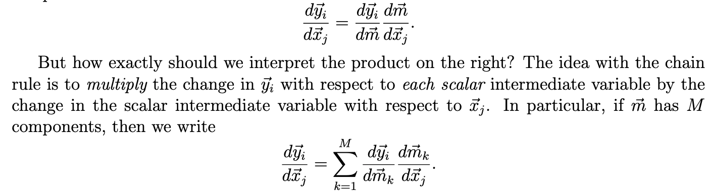

class Mse():
def __call__(self, inp, targ):
self.inp,self.targ = inp,targ
self.out = mse(inp, targ)
return self.out
def backward(self):
N = self.targ.shape[0]
A = self.inp
Y = self.targ
dJ_dA = (2./N) * (A.squeeze() - Y).unsqueeze(-1)
self.inp.g = dJ_dAMotivation
Connect the math to the code for what Jeremy Howard did in his 03_backprop.ipynb notebook for the 2022 part 2 course. The simple network for this post is that we have a single neuron followed by a Rectified Linear Unit (ReLU) and then the Mean Squared Error (MSE) loss function.
I know we want to get to many neurons (stacked in multiple layers) but even this simple setting will take us quite far.
Notation
- \(N\) : number of training examples
- \(d\) : number of features
- \(\mathbf{x}^{(i)}\) is the \(i\)-th training example and can be represented as a column vector \[ \mathbf{x}^{(i)} = \begin{bmatrix} x^{(i)}_1 \\ x^{(i)}_2 \\ \vdots \\ x^{(i)}_d \end{bmatrix} \]
- \(\mathbf{w}\) is the vector of weights for a single neuron \[ \mathbf{w} = \begin{bmatrix} w_1 \\ w_2 \\ \vdots \\ w_d \end{bmatrix} \]
- \(b\) is the bias term for a single neuron
- \(\mathbf{X}\) is an \(N \times d\) matrix with the training examples stacked in rows \[ \mathbf{X} = \begin{bmatrix} x^{(1)}_1 & x^{(1)}_2 & \cdots & x^{(1)}_d\\ x^{(2)}_1 & x^{(2)}_2 & \cdots & x^{(2)}_d\\ \vdots & \vdots & \ddots & \vdots\\ x^{(N)}_1 & x^{(N)}_2 & \cdots & x^{(N)}_d \end{bmatrix} \]
- \(\{y^{(i)}\}_{i=1}^{N}\) are the targets for each of the \(N\) training examples
- \(z^{(i)}\) is the output of our single neuron when the \(i\)-th training example is passed through it
- Specifically, \(z^{(i)} = \mathbf{w}^T\mathbf{x}^{(i)} + b = b + \sum_{j=1}^{d}w_{j}x^{(i)}_{j} = b + w_{1}x^{(i)}_{1} + \ldots + w_{j}x^{(i)}_{j} + \ldots + w_{d}x^{(i)}_{d}\). Additionally we see that,
- \(\frac{\partial z^{(i)}}{\partial w_{j}} = x^{(i)}_{j}\)
- \(\frac{\partial z^{(i)}}{\partial b} = 1\)
- \(\frac{\partial z^{(i)}}{\partial x^{(i)}_{j}} = w_{j}\)
- Specifically, \(z^{(i)} = \mathbf{w}^T\mathbf{x}^{(i)} + b = b + \sum_{j=1}^{d}w_{j}x^{(i)}_{j} = b + w_{1}x^{(i)}_{1} + \ldots + w_{j}x^{(i)}_{j} + \ldots + w_{d}x^{(i)}_{d}\). Additionally we see that,
- \(a^{(i)} = \phi(z^{(i)})\) is the activation when an input \(z^{(i)}\) is passed through an activation function \(\phi\)
- \(\{a^{(i)}\}_{i=1}^{N}\) are the activations for each of the \(N\) training examples when passed through a single neuron followed by the application of the activation function
- For the purposes of this page the activation function is considered to be a ReLU so \[ a^{(i)} = \phi(z^{(i)}) = \max\{0, z^{(i)}\} = \begin{cases} z^{(i)} & z^{(i)} \gt 0 \\ 0 & z^{(i)} \leq 0 \end{cases} \]
Gradients
Note
Erik Learned-Miller’s Vector, Matrix, and Tensor Derivatives was very helpful for this section particularly the following excerpt from page \(7\):

Another useful reference is Terence Parr and Jeremy Howard’s Matrix Calculus You Need For Deep Learning.
After reading this post a good next stop would be Justin Johnson’s Backpropagation for a Linear Layer.
Gradient of loss with respect to the Activations \(a^{(i)}\)
\(J\left(\{y^{(i)}\}_{i=1}^{N},\{a^{(i)}\}_{i=1}^{N}\right) = \frac{1}{N}\sum_{i=1}^{N}(y^{(i)}-a^{(i)})^{2}\) is the loss (mean squared error) across the \(N\) training examples
The backward function of the Mse class computes an estimate of how the loss function changes as the input activations change.
The change in the loss as the \(i\)-th activation changes is given by
\[\frac{\partial J}{\partial a^{(i)}} = \frac{2}{N}\sum_{i=1}^{N} \frac{\partial (y^{(i)}-a^{(i)})^{2}}{\partial a^{(i)}} = \frac{2}{N}(y^{(i)}-a^{(i)})\frac{\partial (y^{(i)}-a^{(i)}) }{\partial a^{(i)}} = \frac{2}{N}(a^{(i)}-y^{(i)})\]
where the last step follows because \(\frac{\partial (y^{(i)}-a^{(i)}) }{\partial a^{(i)}} = 0-1 =-1\).
The change in the loss as a function of the change in activations from our training examples is captured by the \(N \times 1\) matrix:
\[ \frac{\partial J}{\partial \mathbf{a}} = \begin{bmatrix} \frac{\partial J}{\partial a^{(1)}} \\ \frac{\partial J}{\partial a^{(2)}} \\ \vdots \\ \frac{\partial J}{\partial a^{(N)}} \end{bmatrix} = \begin{bmatrix} \frac{2}{N}\left(a^{(1)}-y^{(1)}\right) \\ \frac{2}{N}\left(a^{(2)}-y^{(2)}\right) \\ \vdots \\ \frac{2}{N}\left(a^{(N)}-y^{(N)}\right) \end{bmatrix} \]
From the implementation perspective, the activations \(\{a^{(i)}\}_{i=1}^{N}\) and the targets \(\{y^{(i)}\}_{i=1}^{N}\) are passed in and stored during the forward pass (specifically in the dunder __call__ method). In the backward pass these are retrieved and \(\frac{\partial J}{\partial \mathbf{a}}\) is computed and stored for access by the backward function of the prior layer. Hopefully the backward method for the Mse class makes sense now.
Gradient of loss with respect to the Linear Output \(z^{(i)}\)
class Relu():
def __call__(self, inp):
self.inp = inp
self.out = inp.clamp_min(0.)
return self.out
def backward(self):
dJ_dA = self.out.g
dA_dZ = (self.inp>0).float()
# Note this is an elementwise multiplication
dJ_dZ = dJ_dA * dA_dZ
self.inp.g = dJ_dZHow does the loss change as the output of the linear unit changes?
\[\frac{\partial J}{\partial z^{(i)}} = \frac{\partial J}{\partial a^{(i)}} \frac{\partial a^{(i)}}{\partial z^{(i)}} = \frac{2}{N}\left(a^{(i)}-y^{(i)}\right)\frac{\partial a^{(i)}}{\partial z^{(i)}}\]
For the ReLU activation function we have that, \[ \frac{\partial a^{(i)}}{\partial z^{(i)}} = \begin{cases} 1 & z^{(i)} \gt 0 \\ 0 & z^{(i)} \leq 0 \end{cases} \]
and hence
\[\frac{\partial \mathbf{a}}{\partial \mathbf{z}} = \begin{bmatrix} \frac{\partial a^{(1)}}{\partial z^{(1)}} \\ \frac{\partial a^{(2)}}{\partial z^{(2)}} \\ \vdots \\ \frac{\partial a^{(N)}}{\partial z^{(N)}} \end{bmatrix} \]
Thus the change in the loss as a function of the change in the output from the linear unit on our training examples is given by the \(N \times 1\) matrix:
\[ \frac{\partial J}{\partial \mathbf{z}} = \begin{bmatrix} \frac{\partial J}{\partial z^{(1)}} \\ \frac{\partial J}{\partial z^{(2)}} \\ \vdots \\ \frac{\partial J}{\partial z^{(N)}} \end{bmatrix} = \begin{bmatrix} \frac{\partial J}{\partial a^{(1)}}\frac{\partial a^{(1)}}{\partial z^{(1)}} \\ \frac{\partial J}{\partial a^{(2)}}\frac{\partial a^{(2)}}{\partial z^{(2)}} \\ \vdots \\ \frac{\partial J}{\partial a^{(N)}}\frac{\partial a^{(N)}}{\partial z^{(N)}} \end{bmatrix} \]
So \(\frac{\partial J}{\partial \mathbf{z}}\) ends up being an elementwise product between the corresponding entries of \(\frac{\partial J}{\partial \mathbf{a}}\) and \(\frac{\partial \mathbf{a}}{\partial \mathbf{z}}\).
From the implementation perspective, in the backward pass \(\frac{\partial \mathbf{a}}{\partial \mathbf{z}}\) will be computed locally and multiplied elementwise with \(\frac{\partial J}{\partial \mathbf{a}}\) (this will have been computed in the backward pass in the Mse class and will be available to access when the backward function of the Relu function is called).
Gradient of loss with respect to \(w_{j}, b\) and \(X\)
The next three subsections will explain the backward function of the Lin class.
class Lin():
def __init__(self, w, b): self.w,self.b = w,b
def __call__(self, inp):
self.inp = inp
self.out = lin(inp, self.w, self.b)
return self.out
def backward(self):
# See Gradient of loss with respect to w_j
dJ_dZ = self.out.g
X = self.inp
dJ_dW = X.t() @ dJ_dZ
self.w.g = dJ_dW
# See Gradient of loss with respect to the bias b
dJ_db = dJ_dZ.sum(0)
self.b.g = dJ_db
# See Gradient of loss with respect to X
dJ_dX = dJ_dZ @ self.w.t()
self.inp.g = dJ_dXGradient of loss with respect to \(w_{j}\)
How does the loss react when we wiggle \(w_{j}\)? \[\frac{\partial J}{\partial w_{j}} = \frac{\partial J}{\partial \mathbf{z}} \frac{\partial \mathbf{z}}{\partial w_{j}}= \sum_{i=1}^{N}\frac{\partial J}{\partial z^{(i)}} \frac{\partial z^{(i)}}{\partial w_{j}} = \frac{\partial J}{\partial z^{(1)}}x^{(1)}_{j} + \frac{\partial J}{\partial z^{(2)}}x^{(2)}_{j} + \ldots + \frac{\partial J}{\partial z^{(N)}}x^{(N)}_{j}\]
Thus,
\[ \frac{\partial J}{\partial \mathbf{w}} = \begin{bmatrix} \frac{\partial J}{\partial w_{1}} \\ \frac{\partial J}{\partial w_{2}} \\ \vdots \\ \frac{\partial J}{\partial w_{d}} \end{bmatrix} = \begin{bmatrix} x^{(1)}_{1}\frac{\partial J}{\partial z^{(1)}} + x^{(2)}_{1}\frac{\partial J}{\partial z^{(2)}} + \ldots + x^{(N)}_{1}\frac{\partial J}{\partial z^{(N)}} \\ x^{(1)}_{2}\frac{\partial J}{\partial z^{(1)}} + x^{(2)}_{2}\frac{\partial J}{\partial z^{(2)}} + \ldots + x^{(N)}_{2}\frac{\partial J}{\partial z^{(N)}} \\ \vdots \\ x^{(1)}_{d}\frac{\partial J}{\partial z^{(1)}} + x^{(2)}_{d}\frac{\partial J}{\partial z^{(2)}} + \ldots + x^{(N)}_{d}\frac{\partial J}{\partial z^{(N)}} \end{bmatrix} \]
This is a matrix multiplication in disguise (each row is a dot product) and can be written more compactly as:
\[ \frac{\partial J}{\partial \mathbf{w}} = \begin{bmatrix} x^{(1)}_1 & x^{(2)}_1 & \cdots & x^{(N)}_1\\ x^{(1)}_2 & x^{(2)}_2 & \cdots & x^{(N)}_2\\ \vdots & \vdots & \ddots & \vdots\\ x^{(1)}_d & x^{(2)}_d & \cdots & x^{(N)}_d \end{bmatrix} \begin{bmatrix} \frac{\partial J}{\partial z^{(1)}} \\ \frac{\partial J}{\partial z^{(2)}} \\ \vdots \\ \frac{\partial J}{\partial z^{(N)}} \end{bmatrix} =\mathbf{X}^{T}\frac{\partial J}{\partial \mathbf{z}} \]
From the implementation perspective \(\mathbf{X}^{T}\) is computed locally in the backward function of the Lin class while \(\frac{\partial J}{\partial \mathbf{z}}\) is ready and waiting to be accessed. Recall the latter was computed in the backward function of the Relu class.
Aside
In the lin_grad function, in the earlier portion of the notebook, we see Jeremy computing the gradient with respect to the weights as w.g = (inp.unsqueeze(-1) * out.g.unsqueeze(1)).sum(0).
def lin_grad(inp, out, w, b):
# grad of matmul with respect to input
inp.g = out.g @ w.t()
# What's going on here?
w.g = (inp.unsqueeze(-1) * out.g.unsqueeze(1)).sum(0)
b.g = out.g.sum(0)This uses broadcasting to achieve the same computation as the matrix multiplication between \(X^{T}\) and \(\frac{\partial J}{\partial \mathbf{z}}\).
The inp.unsqueeze(-1) takes inp (our \(X\)) and converts it into a tensor with shape \(N \times d \times 1\). This is then multiplied with out.g.unsqueeze(1) (out.g is \(\frac{\partial J}{\partial \mathbf{z}}\)) with shape \(N \times 1 \times 1\). Broadcasting will make \(d\) “copies” of \(\frac{\partial J}{\partial \mathbf{z}}\) each of which will get multiplied (in the dot product sense) by a column of \(X\) (each column of \(X\) is just the feature values across the training examples). Finally, the sum(0) at the end sums across the first axis to get our \(d \times 1\) shaped output.
Gradient of loss with respect to the bias \(b\)
\[\frac{\partial J}{\partial b} = \frac{\partial J}{\partial \mathbf{z}} \frac{\partial \mathbf{z}}{\partial b}= \sum_{i=1}^{N}\frac{\partial J}{\partial z^{(i)}} \frac{\partial z^{(i)}}{\partial b}= \sum_{i=1}^{N}\frac{\partial J}{\partial z^{(i)}} 1 = \frac{\partial J}{\partial z^{(1)}} + \frac{\partial J}{\partial z^{(2)}} + \ldots + \frac{\partial J}{\partial z^{(N)}}\]
From the implementation perspective we need to access \(\frac{\partial J}{\partial \mathbf{z}}\) and sum across the first axis. The local derivative computation of \(\frac{\partial \mathbf{z}}{\partial b}\) is particulary simple (since each \(\frac{\partial z^{(i)}}{\partial b}\) is just \(1\)).
Gradient of loss with respect to \(x^{(i)}_{j}\)
Let’s understand how the loss will change as we twiddle the \(j\)-th feature of the \(i\)-th training example.
\[\frac{\partial J}{\partial x^{(i)}_{j}} = \frac{\partial J}{\partial \mathbf{z}} \frac{\partial \mathbf{z}}{\partial x^{(i)}_{j}}= \sum_{k=1}^{N}\frac{\partial J}{\partial z^{(k)}} \frac{\partial z^{(k)}}{\partial x^{(i)}_{j}} = \frac{\partial J}{\partial z^{(i)}}\frac{\partial z^{(i)}}{\partial x^{(i)}_{j}} + \sum_{k: k \neq i}^{N} \frac{\partial J}{\partial z^{(k)}}\frac{\partial z^{(k)}}{\partial x^{(i)}_{j}}\]
Since \(\frac{\partial z^{(k)}}{\partial x^{(i)}_{j}} = 0\) for any \(k \neq i\) we get
\[\frac{\partial J}{\partial x^{(i)}_{j}} = \frac{\partial J}{\partial z^{(i)}}w_{j}\]
Thus the \(N \times d\) matrix of these gradients are,
\[ \frac{\partial J}{\partial \mathbf{X}} = \begin{bmatrix} \frac{\partial J}{\partial x^{(1)}_{1}} & \frac{\partial J}{\partial x^{(1)}_{2}} & \cdots & \frac{\partial J}{\partial x^{(1)}_{d}} \\ \frac{\partial J}{\partial x^{(2)}_{1}} & \frac{\partial J}{\partial x^{(2)}_{2}} & \cdots & \frac{\partial J}{\partial x^{(2)}_{d}} \\ \vdots & \vdots & \ddots & \vdots \\ \frac{\partial J}{\partial x^{(N)}_{1}} & \frac{\partial J}{\partial x^{(N)}_{2}} & \cdots & \frac{\partial J}{\partial x^{(N)}_{d}} \end{bmatrix}= \begin{bmatrix} \frac{\partial J}{\partial z^{(1)}}w_{1} & \frac{\partial J}{\partial z^{(1)}}w_{2} & \cdots & \frac{\partial J}{\partial z^{(1)}}w_{d} \\ \frac{\partial J}{\partial z^{(2)}}w_{1} & \frac{\partial J}{\partial z^{(2)}}w_{2} & \cdots & \frac{\partial J}{\partial z^{(2)}}w_{d} \\ \vdots & \vdots & \ddots & \vdots \\ \frac{\partial J}{\partial z^{(N)}}w_{1} & \frac{\partial J}{\partial z^{(N)}}w_{2} & \cdots & \frac{\partial J}{\partial z^{(N)}}w_{d} \end{bmatrix} \]
More compactly this can be represented as an outer product,
\[ \frac{\partial J}{\partial \mathbf{X}} = \begin{bmatrix} \frac{\partial J}{\partial z^{(1)}} \\ \frac{\partial J}{\partial z^{(2)}} \\ \vdots \\ \frac{\partial J}{\partial z^{(N)}} \end{bmatrix} \begin{bmatrix} w_{1} & w_{2} & \cdots & w_{d} \end{bmatrix} =\frac{\partial J}{\partial \mathbf{z}}\mathbf{w}^{T} \]